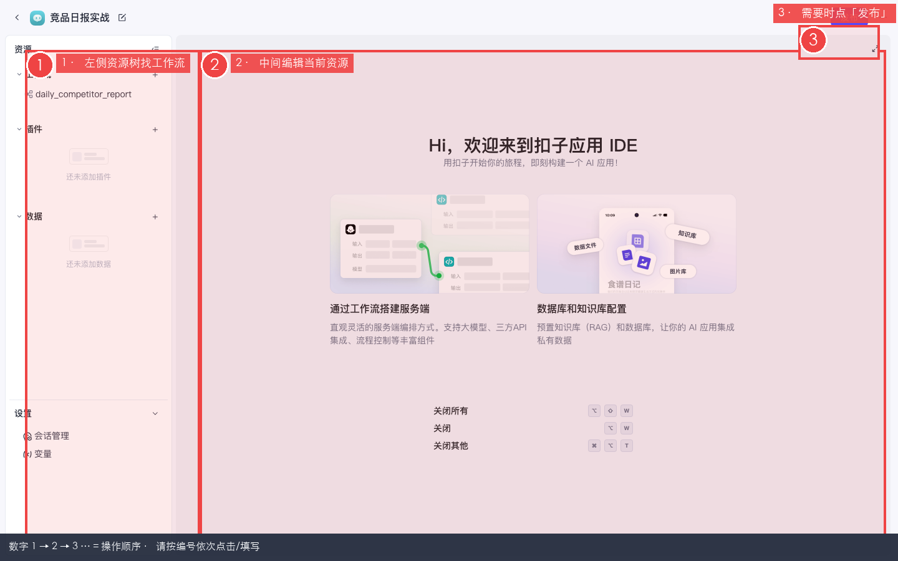
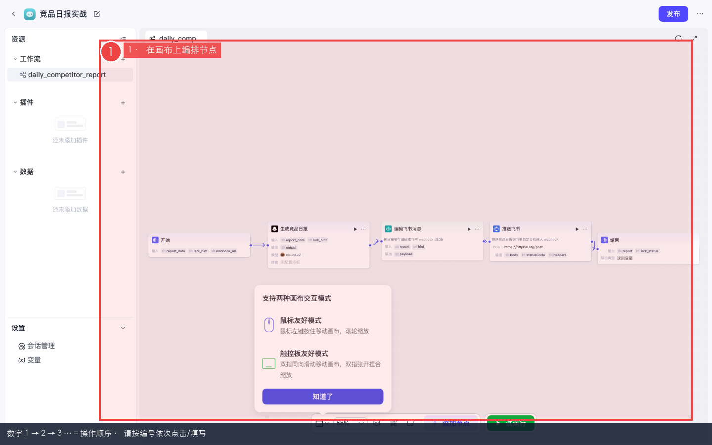

Coze 实战 · 第5课 · P07 · ≈30 min · 开源可用
P07 · 应用 IDE 与资源组织
零基础跟做：创建「竞品日报实战」应用 → 认清左侧资源树 / 中间编辑区 → 在里面新建空工作流 daily_competitor_report。
下一课 P01 将在该画布上搭完整五节点链。前置：P05 插件。
🎯 第5课目标创建应用「竞品日报实战」，认识应用 IDE 的资源树与工作流入口，新建英文名工作流空壳，为下一课编排五节点流水线做准备。
0
应用（Project）是什么？和智能体有何不同？
本步目的 / 作用：一句话：智能体像客服——用户说什么它答什么；应用像一个小项目文件夹——把多条工作流、插件、知识库收在一起，适合「固定流程自动化」。
| 对比项 | 智能体 Agent | 应用 Project |
|---|---|---|
| 入口页面 | 智能体 IDE，右侧对话预览 | 应用 IDE，左侧资源树 |
| 核心能力 | 多轮对话、挂载技能 | 工作流编排、发布为 API |
| 竞品日报场景 | 临时追问「Binance 最近有啥活动？」 | 每天固定生成日报并 POST 飞书 |
| 本课要创建的 | — | 竞品日报实战 |
本课建应用 + 空工作流
下节课五节点编排
P08发布 + 外部 cron
- □ 已登录
http://localhost:8888 - □ 已完成 P00 环境
- □ 本课结束时：左侧资源树里能看到工作流
daily_competitor_report（画布可先只有开始→结束）
1
进入项目开发页
本步目的：完成「进入项目开发页」。请先看懂下方红框标注的截图，再按编号逐步操作；做完用验收行自检。
- 浏览器打开
http://localhost:8888，若未登录先去/sign - 登录后看左侧导航：工作空间 → 展开 Personal Space（个人空间）
- 点击 项目开发
- 地址栏类似 /space/<space_id>/develop
- 页面主体是一张卡片列表：已有智能体、应用、工作流等（第一次可能为空）
本步目的 / 作用：辨认页面：右上角有一个醒目的 + 创建 紫色/蓝色按钮——下一步点它。不要和「资源库」混淆：资源库管全局素材，项目开发管「可发布的成品」。
✅ 验收：能看到「项目开发」标题和「+ 创建」按钮。
2
创建应用「竞品日报实战」
本步目的 / 作用：注意：弹窗里通常有左右两个选项——左边是「创建智能体」，右边是「创建应用」。本课必须选应用。
- 在项目开发页，点右上角 + 创建
- 弹出创建对话框后，看两个大卡片：
- 左侧：创建智能体 — 不要点
- 右侧：创建应用（可能标 Beta）— 点这个
- 填写表单：
- 应用名称：
竞品日报实战 - 应用介绍：
每日生成四所交易所竞品日报并推送飞书（教程演示） - 图标：默认即可
- 应用名称：
- 点 创建 或 确认
- 等待跳转，地址应变为 /space/.../project-ide/<project_id>

图 1：创建弹窗 — 本课选右侧「创建应用」，不是智能体。
数字 1→2→3 = 操作顺序 · 请按编号依次点击 / 填写
踩坑：误建了智能体
若进了智能体 IDE（中间栏是人设/技能，没有左侧工作流树），说明选错了。返回项目开发重新「+ 创建」→ 选应用。
✅ 验收：浏览器 URL 含
project-ide，页面标题或面包屑显示「竞品日报实战」。3
认清应用 IDE 三区布局
本步目的：完成「认清应用 IDE 三区布局」。请先看懂下方红框标注的截图，再按编号逐步操作；做完用验收行自检。
- 左侧 — 资源树：折叠菜单列出本应用内的资源
- 工作流（Workflow）
- 插件、知识、数据库等（随版本略有不同）
- 每个分类旁有 + 可新建
- 中间 — 编辑区：打开某条工作流时显示画布；未选中时可能是欢迎页/引导
- 顶部 — 工具栏：发布、设置、返回项目开发等
- 右侧（打开工作流后）：节点配置面板、试运行按钮

图 2：应用 IDE — 左侧资源栏 + 中间欢迎/编辑区。
数字 1→2→3 = 操作顺序 · 请按编号依次点击 / 填写

图 3：应用 IDE 全貌（实录）。请对照找到：资源树、画布区、发布按钮。
数字 1→2→3 = 操作顺序 · 请按编号依次点击 / 填写
| 区域 | 第6课 P01 会怎么用 |
|---|---|
| 资源树 → 工作流 | 点开 daily_competitor_report 编辑五节点 |
| 画布 | 拖拽：开始 → LLM → Code → HTTP → 结束 |
| 右侧试运行 | 填 report_date、lark_hint 等参数 |
| 顶部发布 | P08 发布后用 OpenAPI 触发 |
4
在应用内新建工作流（名称必须英文）
本步目的 / 作用：命名规则：工作流
name 只能 字母 / 数字 / 下划线，且以字母开头。中文名会直接红字报错无法保存。- 在应用 IDE 左侧资源树，找到 工作流 分类
- 点工作流旁的 +，或右键区域选 新建工作流
- 弹出表单后填写：
- 名称（英文 ID）：
daily_competitor_report - 描述（可中文）：
每日竞品日报生成并推送飞书
- 名称（英文 ID）：
- 点 确认 / 创建
- 中间区域进入工作流画布，默认已有两个节点：开始 和 结束，中间用线连着
- 先不要加节点——下节课 P01 逐步添加。本课只需确认能打开画布
- 点左上角或顶部 保存（部分版本自动保存）

图 4：应用内打开工作流 — 空白画布 + 开始/结束节点。
数字 1→2→3 = 操作顺序 · 请按编号依次点击 / 填写
踩坑：工作流名称填了中文
❌
✅
每日竞品日报 → 输入框下方红字「名称不符合规范」✅
daily_competitor_report → 描述栏写中文没问题
踩坑：在资源库建工作流 vs 在应用内建
资源库也能建全局工作流，但竞品日报应建在应用内，方便和应用一起发布、管理。左侧树属于当前应用即正确。
✅ 验收：左侧树显示
daily_competitor_report；点开可进画布；URL 含 /workflow/。5
组织其它资源（了解即可）
本步目的 / 作用：应用是容器。除了工作流，还可把插件、知识库、数据库关联进来，供节点引用。
| 资源类型 | 存在哪 | 本系列怎么用 |
|---|---|---|
| 工作流 | 应用内优先 | P01 竞品日报主流程 |
| 插件 | 空间资源库 + 应用引用 | P05 已学；Agent 对话调用 |
| 知识库 | 空间资源库 | P04 挂到 Agent 做 RAG |
| 数据库 | 空间资源库 | P06 记忆读写 |
| 多工作流 | 同一应用内 | 可拆：日报推送 / 数据入库 / 告警 |
5.1 关联资源的一般步骤（以后会用）
- 先在 资源库 创建素材（知识库、插件等）
- 进入应用 IDE，左侧对应分类点 + → 从资源库添加
- 工作流节点里即可选择已关联的插件或知识
竞品日报 P01 不强制挂知识库或插件——用 LLM 生成 + HTTP 推送即可跑通。进阶时可加搜索插件拉实时资讯。
6
应用、智能体、工作流怎么分工？
本步目的：完成「应用、智能体、工作流怎么分工？」。请先看懂下方红框标注的截图，再按编号逐步操作；做完用验收行自检。
| 你想做什么 | 用什么 | 课号 |
|---|---|---|
| 和用户聊天、追问细节 | 智能体 Agent | P02 |
| 对话里顺便跑一条流水线 | Agent 挂载工作流技能 | P03 |
| 每天固定时间推送到飞书群 | 应用 + 工作流 + 外部 cron | P01 + P08 |
| 查文档回答问题 | Agent + 知识库 | P04 |
| 调第三方 API 工具 | 插件 或 工作流 HTTP 节点 | P05 / P01 |
开源版没有内置定时触发（界面里没有 Cron 节点）。「每日」靠 Linux crontab 或调度系统调
/v1/workflow/run，P08 会写具体 curl。记忆口诀： 对话问 → Agent 定时推 → Project + Workflow + 外部 cron 精确格式 → Code 节点 + HTTP RAW_TEXT（P01 核心）
7
本课验收清单
本步目的 / 作用：用清单自检本课是否真正做完；全部勾上再点「下一课」，避免带着半成品进入后续依赖课。
- □ 能从项目开发页创建应用（不是智能体）
- □ 应用名称是
竞品日报实战 - □ 能进入 /project-ide/:id 并说出左/中/顶三区作用
- □ 应用内新建工作流
daily_competitor_report（英文名，无中文） - □ 能打开画布，看到默认「开始 → 结束」
- □ 理解：下节课在此画布补全 LLM / Code / HTTP 节点
全部打勾 → 进入 P01 竞品日报工作流实战（第6课，核心课）。